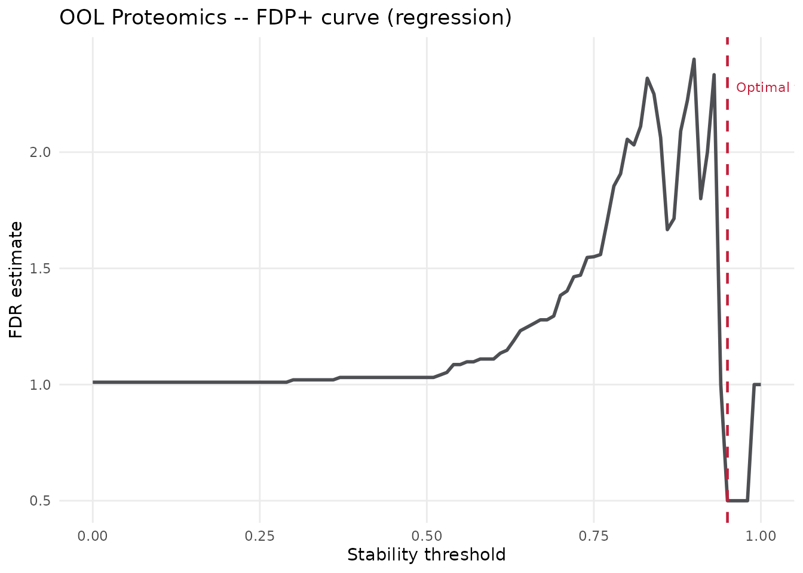
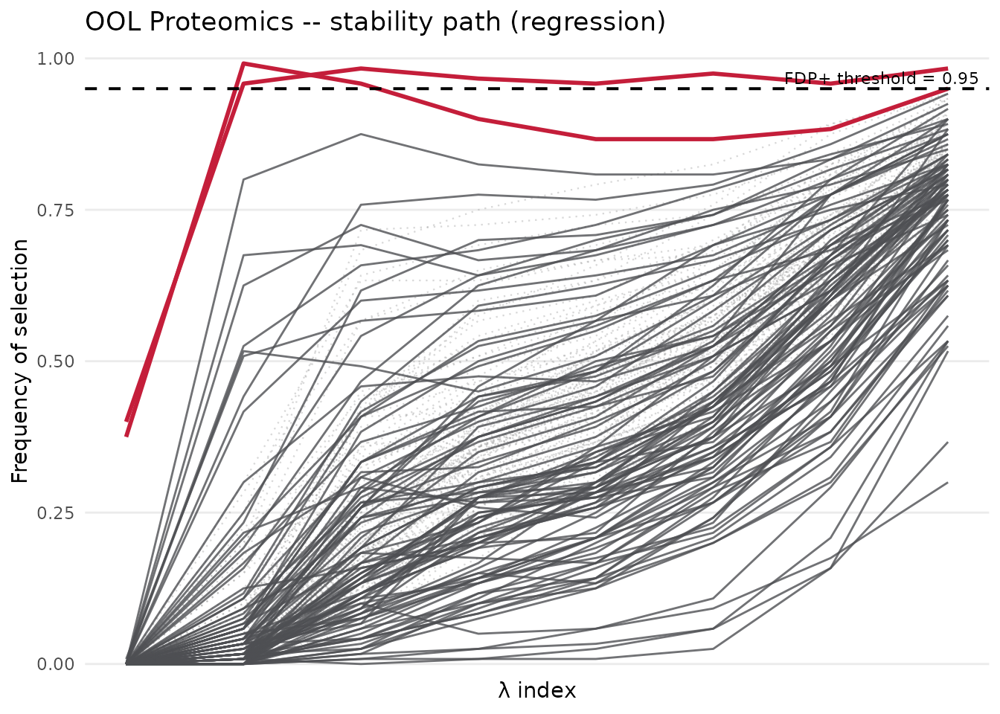
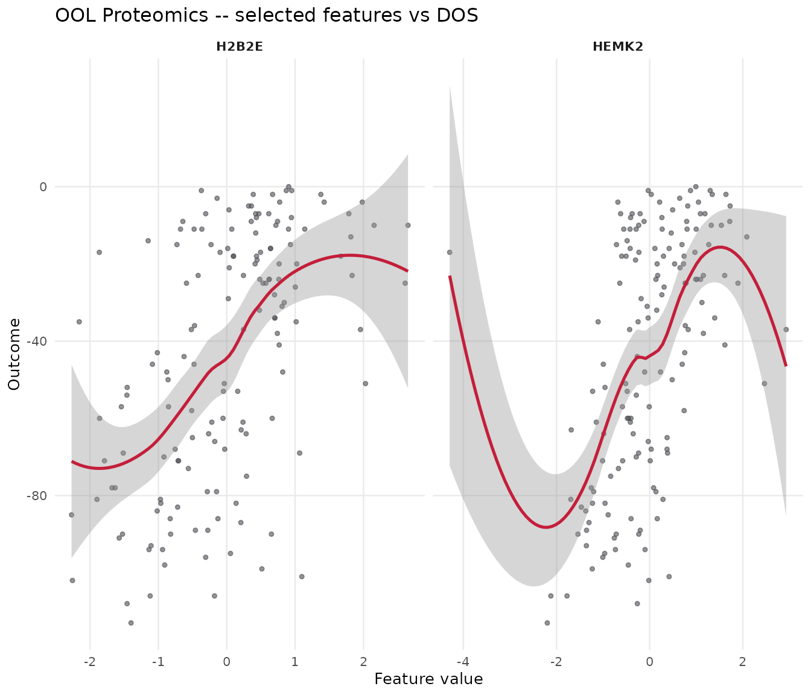

Python-R Workflow Mapping for STABL
Source:vignettes/stablr-python-parity.Rmd
stablr-python-parity.RmdOverview
This vignette maps the analyses from the STABL Tutorial Notebook onto
the R stablr API. It uses the same preprocessing shape and
real OOL validation workflow, but the rendered run uses bounded settings
so package builds remain practical. Use the larger settings noted below
for a high-fidelity parity experiment.
| Aspect | Python (stabl) |
R (stablr) |
|---|---|---|
| Base learner | sklearn.linear_model.Lasso |
glmnet::glmnet (LASSO) |
| Bootstrapping | n_bootstraps |
n_bootstraps |
| FDP control | fdr_threshold_range = np.arange(0, 1, 0.01) |
seq(0, 1, by = 0.01) |
| Artificial features |
"knockoff" in the tutorial |
random_permutation here for render speed;
knockoff for extended parity |
| Random state | 42 |
random_state = 42L |
Two analyses:
-
OOL Regression – Onset of Labor proteomics,
family = "gaussian", real train/validation split, bounded STABL settings. -
COVID-19 Binary Classification – Proteomics,
family = "binomial", shown as an extended optional run because the data are not bundled with the package build.
library(stablr)
render_n_bootstraps <- 120L
render_n_lambda <- 8L
render_artificial_type <- "random_permutation"
run_extended <- identical(Sys.getenv("STABLR_RUN_EXTENDED_VIGNETTES"), "true")The rendered configuration uses 120 bootstraps and 8 lambda values.
For a parity report intended to match the Python tutorial more closely,
use 500-1000 bootstraps with artificial_type = "knockoff"
and run outside package-build time.
Preprocessing helpers
The Python tutorial uses:
VarianceThreshold -> LowInfoFilter -> SimpleImputer (median) -> StandardScaler.
preprocess_fit <- function(x, min_var = 1e-6) {
col_vars <- apply(x, 2, var, na.rm = TRUE)
keep_cols <- col_vars > min_var
x <- x[, keep_cols, drop = FALSE]
col_medians <- apply(x, 2, median, na.rm = TRUE)
for (j in seq_along(col_medians)) {
na_idx <- is.na(x[, j])
if (any(na_idx)) x[na_idx, j] <- col_medians[j]
}
col_means <- colMeans(x)
col_sds <- apply(x, 2, sd)
col_sds[col_sds < 1e-10] <- 1
x <- sweep(sweep(x, 2, col_means), 2, col_sds, "/")
list(x = x, keep_cols = keep_cols, col_medians = col_medians,
col_means = col_means, col_sds = col_sds)
}
preprocess_apply <- function(x, pipe) {
x <- x[, pipe$keep_cols, drop = FALSE]
for (j in seq_len(ncol(x))) {
na_idx <- is.na(x[, j])
if (any(na_idx)) x[na_idx, j] <- pipe$col_medians[j]
}
sweep(sweep(x, 2, pipe$col_means), 2, pipe$col_sds, "/")
}Part 1 – Regression: Onset of Labor Proteomics
ool_train <- load_ool_data(split = "train")
ool_valid <- load_ool_data(split = "valid")
pipe_prot <- preprocess_fit(ool_train$x_list$proteomics)
x_prot <- pipe_prot$x
y_prot <- ool_train$y
x_prot_valid <- preprocess_apply(ool_valid$x_list$proteomics, pipe_prot)
y_prot_valid <- ool_valid$y
cat("Training set: ", nrow(x_prot), "samples x", ncol(x_prot), "features\n")
#> Training set: 150 samples x 100 features
cat("Validation set: ", nrow(x_prot_valid), "samples x", ncol(x_prot_valid), "features\n")
#> Validation set: 21 samples x 100 features
lambda_prot <- auto_lambda_grid(
x_prot, y_prot,
family = "gaussian",
n_lambda = render_n_lambda
)
set.seed(42)
fit_prot <- stabl_fit(
x = x_prot,
y = y_prot,
lambda_grid = lambda_prot,
base_learner = "lasso",
family = "gaussian",
n_bootstraps = render_n_bootstraps,
artificial_type = render_artificial_type,
fdr_threshold_range = seq(0, 1, by = 0.01),
random_state = 42L
)
fit_prot
#> <stabl_fit>
#> Features in: 100
#> Features selected: 2
#> Min FDP+: 0.5
#> FDP+ threshold: 0.95
#> Artificial: random_permutation
sel_prot <- get_support(fit_prot)
cat("Selected features (n =", sum(sel_prot), "):\n")
#> Selected features (n = 2 ):
print(names(which(sel_prot)))
#> [1] "HEMK2" "H2B2E"
cat("\nTop 10 stability scores:\n")
#>
#> Top 10 stability scores:
print(head(sort(get_importances(fit_prot), decreasing = TRUE), 10))
#> H2B2E HEMK2 SMOC1 Mcl.1 PSP CD59 ApoM H31
#> 0.9916667 0.9833333 0.9416667 0.9250000 0.9166667 0.9000000 0.9000000 0.9000000
#> NEGR1 c.Myc
#> 0.8916667 0.8833333
plot_fdr_graph(fit_prot, title = "OOL Proteomics -- FDP+ curve (regression)")
plot_stabl_path(fit_prot, title = "OOL Proteomics -- stability path (regression)")
sel_prot_names <- names(which(sel_prot))
if (length(sel_prot_names) > 0) {
scatterplot_features(
features = sel_prot_names,
x = x_prot,
y = y_prot,
title = "OOL Proteomics -- selected features vs DOS"
)
}
Part 2 – Binary Classification: COVID-19 Proteomics
covid_train_dir <- normalizePath(
file.path(system.file("", package = "stablr"),
"..", "..", "..", "..", "Sample Data", "COVID-19", "Training"),
mustWork = FALSE
)
eval_covid <- dir.exists(covid_train_dir) &&
file.exists(file.path(covid_train_dir, "Proteomics.csv")) &&
isTRUE(run_extended)
if (!dir.exists(covid_train_dir)) {
message("COVID-19 data not found -- skipping COVID-19 section.")
} else if (!isTRUE(run_extended)) {
message("COVID-19 data found, but the section is skipped by default. Set STABLR_RUN_EXTENDED_VIGNETTES=true to evaluate it.")
}
#> COVID-19 data not found -- skipping COVID-19 section.
covid_valid_dir <- file.path(dirname(covid_train_dir), "Validation")
prot_tr <- as.matrix(read.csv(file.path(covid_train_dir, "Proteomics.csv"),
row.names = 1, check.names = FALSE))
y_tr_df <- read.csv(file.path(covid_train_dir, "Mild&ModVsSevere.csv"),
row.names = 1, check.names = FALSE)
prot_val <- as.matrix(read.csv(file.path(covid_valid_dir, "Validation_proteomics.csv"),
row.names = 1, check.names = FALSE))
y_val_df <- read.csv(
file.path(covid_valid_dir, "Validation_outcome(WHO.0 >= 5).csv"),
row.names = 1, check.names = FALSE)
common_tr <- intersect(rownames(prot_tr), rownames(y_tr_df))
common_val <- intersect(rownames(prot_val), rownames(y_val_df))
pipe_covid <- preprocess_fit(prot_tr[common_tr, ])
x_covid_train <- pipe_covid$x
y_covid_train <- setNames(as.integer(y_tr_df[common_tr, 1]), common_tr)
x_covid_valid <- preprocess_apply(prot_val[common_val, ], pipe_covid)
y_covid_valid <- setNames(as.integer(y_val_df[common_val, 1]), common_val)
cat("COVID train:", nrow(x_covid_train), "x", ncol(x_covid_train), "\n")
cat("COVID valid:", nrow(x_covid_valid), "x", ncol(x_covid_valid), "\n")
print(table(y_covid_train))
lambda_covid <- auto_lambda_grid(
x_covid_train, y_covid_train,
family = "binomial",
n_lambda = render_n_lambda
)
set.seed(42)
fit_covid <- stabl_fit(
x = x_covid_train,
y = y_covid_train,
lambda_grid = lambda_covid,
base_learner = "lasso",
family = "binomial",
n_bootstraps = 200L,
artificial_type = render_artificial_type,
fdr_threshold_range = seq(0.1, 1, by = 0.01),
random_state = 42L
)
fit_covid
sel_covid <- get_support(fit_covid)
cat("Selected features (n =", sum(sel_covid), "):\n")
print(names(which(sel_covid)))
plot_fdr_graph(fit_covid, title = "COVID-19 Proteomics -- FDP+ curve")
plot_stabl_path(fit_covid, title = "COVID-19 Proteomics -- stability path")
sel_covid_names <- names(which(sel_covid))
if (length(sel_covid_names) > 0) {
boxplot_features(
features = sel_covid_names,
x = x_covid_train,
y = factor(y_covid_train, labels = c("Mild/Mod", "Severe")),
title = "COVID-19 -- selected features (training)"
)
}Part 3 – Full pipeline: validation performance
sel_names_prot <- names(which(get_support(fit_prot)))
cat("OOL: using", length(sel_names_prot), "selected features for final model\n")
#> OOL: using 2 selected features for final model
if (length(sel_names_prot) > 0) {
df_tr <- as.data.frame(x_prot[, sel_names_prot, drop = FALSE])
df_tr$y <- y_prot
final_lm <- lm(y ~ ., data = df_tr)
df_val <- as.data.frame(x_prot_valid[, sel_names_prot, drop = FALSE])
y_pred_val <- predict(final_lm, newdata = df_val)
cat("Validation Pearson r:", round(cor(y_pred_val, y_prot_valid), 3), "\n")
cat("Validation RMSE: ", round(sqrt(mean((y_pred_val - y_prot_valid)^2)), 2), "\n")
} else {
cat("No features selected -- cannot build final model.\n")
}
#> Validation Pearson r: 0.21
#> Validation RMSE: 33.33
sel_names_covid <- names(which(get_support(fit_covid)))
cat("COVID-19: using", length(sel_names_covid), "selected features for final model\n")
if (length(sel_names_covid) > 0) {
df_tr_c <- as.data.frame(x_covid_train[, sel_names_covid, drop = FALSE])
df_tr_c$y <- y_covid_train
final_glm <- glm(y ~ ., data = df_tr_c, family = binomial())
df_val_c <- as.data.frame(x_covid_valid[, sel_names_covid, drop = FALSE])
y_pred_covid <- predict(final_glm, newdata = df_val_c, type = "response")
plot_roc(y_true = y_covid_valid, y_preds = y_pred_covid,
title = "COVID-19 -- Validation ROC")
plot_prc(y_true = y_covid_valid, y_preds = y_pred_covid,
title = "COVID-19 -- Validation PRC")
} else {
cat("No features selected -- cannot build final model.\n")
}Parity notes
-
glmnetLASSO and scikit-learn LASSO differ in coordinate descent implementation. Feature selections should be concordant but not identical. - The rendered vignette uses random-permutation decoys for speed. For
high-fidelity parity work, switch to
artificial_type = "knockoff"and use the Python tutorial bootstrap counts. - Stability scores should be compared at matched bootstrap counts, artificial feature strategy, lambda grid, and preprocessing choices.
sessionInfo()
#> R version 4.5.1 (2025-06-13)
#> Platform: x86_64-conda-linux-gnu
#> Running under: Rocky Linux 8.10 (Green Obsidian)
#>
#> Matrix products: default
#> BLAS/LAPACK: /exports/archive/hg-funcgenom-research/mdmanurung/conda/envs/R4_51/lib/libopenblasp-r0.3.29.so; LAPACK version 3.12.0
#>
#> locale:
#> [1] LC_CTYPE=C.UTF-8 LC_NUMERIC=C LC_TIME=C.UTF-8
#> [4] LC_COLLATE=C.UTF-8 LC_MONETARY=C.UTF-8 LC_MESSAGES=C.UTF-8
#> [7] LC_PAPER=C.UTF-8 LC_NAME=C LC_ADDRESS=C
#> [10] LC_TELEPHONE=C LC_MEASUREMENT=C.UTF-8 LC_IDENTIFICATION=C
#>
#> time zone: Europe/Amsterdam
#> tzcode source: system (glibc)
#>
#> attached base packages:
#> [1] stats graphics grDevices utils datasets methods base
#>
#> other attached packages:
#> [1] stablr_0.0.0.9000
#>
#> loaded via a namespace (and not attached):
#> [1] sass_0.4.10 generics_0.1.4 shape_1.4.6.1 lattice_0.22-9
#> [5] digest_0.6.39 magrittr_2.0.4 evaluate_1.0.5 grid_4.5.1
#> [9] RColorBrewer_1.1-3 iterators_1.0.14 fastmap_1.2.0 foreach_1.5.2
#> [13] jsonlite_2.0.0 glmnet_4.1-10 Matrix_1.7-5 survival_3.8-6
#> [17] mgcv_1.9-4 scales_1.4.0 codetools_0.2-20 textshaping_1.0.4
#> [21] jquerylib_0.1.4 cli_3.6.6 rlang_1.2.0 splines_4.5.1
#> [25] withr_3.0.2 cachem_1.1.0 yaml_2.3.11 otel_0.2.0
#> [29] tools_4.5.1 dplyr_1.1.4 ggplot2_4.0.3 vctrs_0.7.3
#> [33] R6_2.6.1 lifecycle_1.0.5 fs_2.1.0 htmlwidgets_1.6.4
#> [37] ragg_1.5.0 pkgconfig_2.0.3 desc_1.4.3 pkgdown_2.2.0
#> [41] bslib_0.10.0 pillar_1.11.1 gtable_0.3.6 glue_1.8.1
#> [45] Rcpp_1.1.1-1.1 systemfonts_1.3.1 xfun_0.54 tibble_3.3.0
#> [49] tidyselect_1.2.1 knitr_1.51 dichromat_2.0-0.1 farver_2.1.2
#> [53] htmltools_0.5.9 nlme_3.1-169 rmarkdown_2.31 labeling_0.4.3
#> [57] compiler_4.5.1 S7_0.2.2